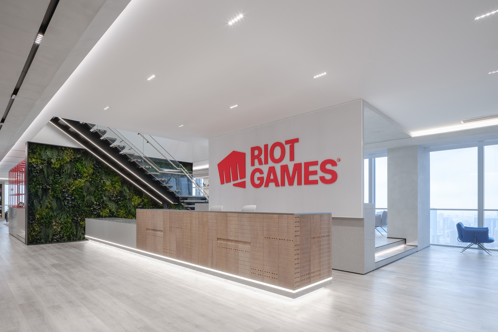

About Us

Riot Games was founded in 2006 to create games and experiences that make it better to be a player. In 2009, we launched our debut title, League of Legends, which has gone on to be one of the most-played PC games in the world. In the years since, we’ve released VALORANT, Teamfight Tactics, Legends of Runeterra, and League of Legends: Wild Rift. Our titles are played in some of the most widely recognized esports in the world, culminating in events like the League of Legends World Championship and VALORANT Champions, which are watched by millions of fans each year. We’ve also expanded our IP through projects across music, comic books, board games, and Arcane, our Emmy-winning animated series.
We believe that anyone with passion, vision, and perseverance can make a positive impact. As part of that ethos, we also believe that there are ways where we, as a company, can provide long-term value and positive impact to the players, partners, Rioters, and communities we serve.Through corporate social responsibility, we hope to apply our unique resources and strengths to create a positive and lasting impact for all of our stakeholders, players, Rioters, our communities, and our planet.
Environmental sustainability is a crucial issue for players, for Riot, and for the entire world. While sustainability has always been something we’ve strived for, it’s high time we made our commitments abundantly clear. By putting in the work ourselves, working with impactful partners, and sharing best practices with the rest of the gaming industry, we can, and must, push forward towards a healthier world.
We believe that anyone with passion, vision, and perseverance can make a positive impact. As part of that ethos, we also believe that there are ways where we, as a company, can provide long-term value and positive impact to the players, partners, Rioters, and communities we serve.Through corporate social responsibility, we hope to apply our unique resources and strengths to create a positive and lasting impact for all of our stakeholders, players, Rioters, our communities, and our planet.
Environmental sustainability is a crucial issue for players, for Riot, and for the entire world. While sustainability has always been something we’ve strived for, it’s high time we made our commitments abundantly clear. By putting in the work ourselves, working with impactful partners, and sharing best practices with the rest of the gaming industry, we can, and must, push forward towards a healthier world.